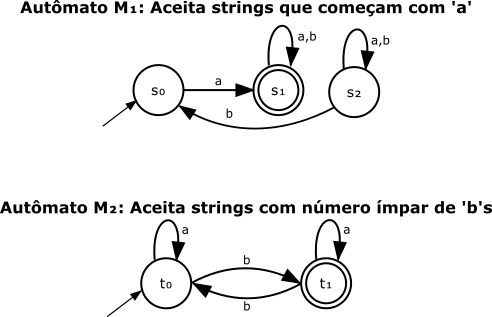

4 Autômatos Finitos Determinísticos
Está sem tempo? Leia o Expresso.
Como vimos no capítulo anterior, as Máquinas de Estados Finitos formam a base teórica para os analisadores léxicos. Entre os diferentes tipos de máquinas de estados, os Autômatos Finitos Determinísticos ocupam uma posição de especial importância na engenharia de compiladores, representando a forma mais eficiente e prática de implementar o reconhecimento de padrões léxicos.
Um Autômato Finito Determinístico é um modelo matemático preciso para representar sistemas que podem estar em um número finito de estados e que respondem a entradas de forma completamente previsível e unívoca. A palavra determinístico é fundamental aqui: para cada combinação de estado atual e símbolo de entrada, existe exatamente uma transição possível. Esta propriedade elimina qualquer ambiguidade no processo de reconhecimento, tornando os Autômatos Finitos Determinísticos ideais para implementações práticas como os analisadores léxicos.
A importância dos Autômatos Finitos Determinísticos na análise léxica não pode ser subestimada. Eles representam o produto final do processo de construção de analisadores léxicos: uma máquina de estados que pode processar um fluxo de caracteres em tempo linear, identificando tokens de forma eficiente e sem ambiguidades. Como veremos ao longo deste capítulo, a elegante leitora descobrirá que esta simplicidade aparente esconde uma poderosa capacidade de reconhecimento que fundamenta toda a primeira fase da compilação.
4.1 Definição Formal e Componentes
Um Autômato Finito Determinístico é formalmente definido como uma 5-tupla matemática:
\[M = (Q, \Sigma, \delta, q_0, F)\]
na qual cada componente possui um papel específico e bem definido:
- \(Q\) é o conjunto finito de estados da máquina;
- \(\Sigma\) é o alfabeto de entrada, um conjunto finito de símbolos;
- \(\delta\) é a função de transição determinística;
- \(q_0\) é o estado inicial único;
- \(F\) é o conjunto de estados de aceitação (ou estados finais).
É importante que a atenta leitora observe que esta definição impõe restrições matemáticas precisas:
\[q_0 \in Q \quad \text{e} \quad F \subseteq Q\]
Estas restrições garantem a consistência do modelo: o estado inicial deve necessariamente pertencer ao conjunto de estados, e todos os estados de aceitação devem ser estados válidos da máquina. Mais formalmente, um Autômato Finito Determinístico representa um sistema que, em qualquer momento, encontra-se em exatamente um estado do conjunto \(Q\), e que, ao receber um símbolo de entrada do alfabeto \(\Sigma\), transita deterministicamente para um novo estado, que pode, inclusive, ser o mesmo estado atual.
4.1.1 Exercícios 1
1. Dado o Autômato Finito Determinístico \(M =(\{s_0,s_1,s_2,s_3\},\{a,b\},\delta,s_0,\{s_0,s_3\})\), identifique cada um dos cinco componentes da tupla com sua respectiva descrição.
2. Um modelo foi definido como \(M =(Q,\Sigma,\delta,q_0,F)\) onde \(Q=\{q_0,q_1\}\), \(\Sigma=\{0,1\}\), \(q_0=q_0\), e \(F=\{q_2\}\). Este modelo representa um Autômato Finito Determinístico válido? Justifique sua resposta com base nas restrições formais.
3. Se um Autômato Finito Determinístico possui \(\mid Q \mid=3\) estados e um alfabeto com \(\mid \Sigma \mid=4\) símbolos, qual é o número exato de pares no domínio da função de transição \(\delta\)?
4. É possível que o conjunto de estados de aceitação \(F\) seja igual ao conjunto de todos os estados \(Q\)? Se sim, o que isso significaria sobre a linguagem reconhecida pelo autômato?
5. É possível que o estado inicial \(q_0\) também seja um estado de aceitação, ou seja, q_0inF? Se sim, o que isso implica sobre a aceitação da string vazia, epsilon?
4.1.2 A Função de Transição Determinística
O coração de um Autômato Finito Determinístico reside na sua função de transição \(\delta\), que captura completamente o comportamento da máquina. Esta função é definida matematicamente como:
\[\delta : Q \times \Sigma \rightarrow Q\]
A função de transição \(\delta\) possui uma propriedade fundamental que a distingue de modelos não-determinísticos: para cada par \((q, a)\) no qual \(q \in Q\) e \(a \in \Sigma\), existe exatamente um estado de destino. Esta unicidade elimina qualquer ambiguidade no processo de computação e permite que a máquina seja simulada de forma eficiente em tempo linear.
A definição matemática da função de transição \(\delta : Q \times \Sigma \rightarrow Q\) implica que ela deve ser uma função total, ou seja, deve haver exatamente uma transição definida para cada par de estado e símbolo de entrada. Um Autômato Finito Determinístico que cumpre essa exigência é chamado de completo.
Na prática, muitos autômatos possuem combinações de estado e símbolo que quebram a lógica do padrão que está sendo reconhecido. Por exemplo, em um autômato que reconhece a palavra “treco”, o que acontece se ele estiver no estado inicial e ler a letra ‘z’?
Para tratar esses casos e manter a função de transição total, introduz-se um estado de erro, também conhecido como estado poço ou sumidouro. Este é um estado especial não-final do qual não há escapatória: toda transição a partir do estado de erro aponta para ele mesmo.
\[ \forall a \in \Sigma, \quad \delta(q_{\text{erro}}, a) = q_{\text{erro}} \]
Dessa forma, qualquer sequência de entrada que desvie do padrão desejado é permanentemente capturada pelo estado de erro, garantindo que a string seja rejeitada. Por uma questão de clareza visual, muitos diagramas de transição omitem o estado de erro e as setas que levam a ele, mas é importante saber que, para um autômato ser formalmente completo, essas transições implícitas devem existir.
A característica determinística da função de transição tem implicações profundas para a implementação prática. Em um Autômato Finito Determinístico, não há escolhas a serem feitas durante a execução: dado o estado atual e o símbolo de entrada, o próximo estado é inequivocamente determinado. Esta propriedade permite implementações extremamente eficientes, nas quais cada símbolo de entrada requer apenas uma consulta à tabela de transições, tipicamente implementada como um array bidimensional, ou uma operação equivalente.
O domínio da função \(\delta\) é o produto cartesiano \(Q \times \Sigma\), que representa o conjunto de todas as combinações possíveis de estado atual e símbolo de entrada. Para uma máquina com cardinalidade \(\mid Q \mid = n\) estados e um alfabeto com cardinalidade \(\mid \Sigma \mid = k\) símbolos, existem exatamente \(n \times k\) transições possíveis, e cada uma deve estar definida para que o autômato seja completo e funcional.
4.1.2.1 Exercícios 2
1. Considere um Autômato Finito Determinístico que reconhece identificadores que começam com ‘l’ (letra) e são seguidos por ‘d’ (dígito). O alfabeto é \(\Sigma=l,d\). As transições definidas são \(\delta(q_0,l)=q_1\) e \(\delta(q_1,d)=q_1\). O estado de aceitação é \(F=q_1\). Este autômato é completo? Se não, adicione um estado de erro \(q_e\) e liste todas as transições que faltam para completá-lo.
2. Explique com suas próprias palavras por que a propriedade determinística (para cada par \((q,a)\), existe exatamente um estado de destino) é importante para a eficiência da implementação de um analisador léxico.
3. Um estado de erro (ou poço) pode ser um estado de aceitação? Justifique sua resposta com base na função de um estado de erro.
4. Se um Autômato Finito Determinístico completo não possui um estado de erro explicitamente desenhado em seu diagrama, o que se assume sobre as transições não mostradas?
5. Dada a definição \(\delta:Q \times \Sigma \rightarrow Q\), se a máquina está no estado \(q_i\) e lê um símbolo \(a \in \Sigma\), é possível que ela permaneça no mesmo estado, ou seja, \(\delta(q_i,a)=q_i\)? Dê um exemplo prático.
4.2 Representações de Autômatos Finitos Determinísticos
Os Autômatos Finitos Determinísticos podem ser representados de diversas formas, cada uma adequada a diferentes contextos e propósitos. As três representações mais comuns são a algébrica, a tabular e a gráfica. Cada representação oferece vantagens específicas: a forma algébrica é precisa e compacta para definições formais, a tabela de transições é eficiente para implementação computacional, e o diagrama de transições oferece intuição visual sobre o comportamento da máquina.
4.2.1 Representação Tabular
A tabela de transições constitui uma das formas mais práticas e amplamente utilizadas para representar Autômatos Finitos Determinísticos, especialmente em implementações computacionais. Esta representação organiza a função de transição \(\delta\) em uma matriz bidimensional, na qual as linhas correspondem aos estados e as colunas aos símbolos do alfabeto.
A Table 4.1 ilustra um exemplo de tabela de transições para um Autômato Finito Determinístico:
| Estado | 0 | 1 |
|---|---|---|
| \(\rightarrow q_0\) | \(q_2\) | \(q_0\) |
| \(*q_1\) | \(q_1\) | \(q_1\) |
| \(q_2\) | \(q_2\) | \(q_1\) |
Na Table 4.1, as convenções notacionais seguem o padrão estabelecido na literatura de teoria da computação:
- Os estados estão listados na primeira coluna, cada um representando um elemento do conjunto \(Q\);
- As colunas subsequentes representam os símbolos do alfabeto \(\Sigma = \{0, 1\}\);
- As células da tabela contêm os estados de destino, definindo completamente a função \(\delta\);
- A seta \(\rightarrow\) identifica o estado inicial \(q_0\);
- O asterisco \(*\) marca os estados de aceitação, neste caso, o conjunto \(F = \{q_1\}\).
Esta representação tabular possui vantagens computacionais significativas. A implementação de um Autômato Finito Determinístico baseada em tabela permite acesso em tempo constante \(O(1)\) para cada transição, resultando em uma complexidade total de \(O(n)\) para processar uma string de entrada de comprimento \(n\). Além disso, a estrutura tabular mapeia-se naturalmente para arrays bidimensionais na maioria das linguagens de programação.
4.2.2 Representação Gráfica
A representação gráfica, conhecida como diagrama de transições, oferece uma visualização intuitiva do comportamento dinâmico do Autômato Finito Determinístico. Nesta representação, a máquina é modelada como um grafo direcionado, no qual os vértices representam estados e as arestas rotuladas representam transições.
A Figure 4.1 apresenta o diagrama de transições correspondente à tabela Table 4.1:

No diagrama da Figure 4.1, as convenções visuais estabelecem uma linguagem gráfica precisa:
- Os círculos representam os estados do conjunto \(Q\);
- As setas direcionadas representam as transições, codificando a função \(\delta\);
- Os rótulos nas setas indicam os símbolos de entrada que causam as transições;
- O estado inicial é identificado por uma seta sem origem, vinda do nada;
- Os estados de aceitação são representados por círculos duplos, destacando visualmente sua função especial.
A representação gráfica é particularmente valiosa para compreender o comportamento global da máquina e para visualizar caminhos de computação. Para a atenta leitora, o diagrama torna evidente que qualquer quantidade de ‘1’s iniciais será ignorada no estado \(q_0\). A máquina só avança ao ler um ’0’, transicionando para o estado \(q_2\). A partir daí, qualquer ‘1’ lido leva ao estado de aceitação \(q_1\), enquanto mais ’0’s mantêm a máquina em \(q_2\). Esta visualização facilita a compreensão do fluxo de estados e das condições de aceitação.
4.2.3 Especificação Formal do Exemplo
Para o Autômato Finito Determinístico ilustrado na Table 4.1 e na Figure 4.1, um autômato que aceita strings contendo um ‘0’ seguido em algum momento por um ‘1’ será dada pela 5-tupla \(M = (Q, \Sigma, \delta, q_0, F)\) definida como:
- Conjunto de Estados (\(Q\)): \(Q = \{q_0, q_1, q_2\}\);
- Alfabeto (\(\Sigma\)): \(\Sigma = \{0, 1\}\);
- Estado Inicial (\(q_0\)): o estado inicial é \(q_0\);
- Conjunto de Estados de Aceitação (\(F\)): \(F = \{q_1\}\);
- Função de Transição (\(\delta\)):
- \(\delta(q_0, 0) = q_2\)
- \(\delta(q_0, 1) = q_0\)
- \(\delta(q_1, 0) = q_1\)
- \(\delta(q_1, 1) = q_1\)
- \(\delta(q_2, 0) = q_2\)
- \(\delta(q_2, 1) = q_1\)
Esta especificação formal define completamente o comportamento do autômato, incluindo seus estados, alfabeto, estado inicial, estados de aceitação e a função de transição. A atenta leitora notará que esta definição é suficiente para implementar ou simular o autômato em qualquer sistema computacional.
4.2.4 Exercícios 3
1. Desenhe o diagrama de transições para o Autômato Finito Determinístico descrito pela seguinte tabela. Use as convenções gráficas para o estado inicial e os estados de aceitação.
| Estado | 0 | 1 |
|---|---|---|
| q_A | q_B | q_A |
| q_B | q_B | q_C |
| *q_C | q_B | q_A |
2. Para o diagrama de transições abaixo, que reconhece strings em a,b com um número par de ’a’s e um número par de ’b’s, forneça a especificação formal completa (a 5-tupla).
3. Converta a especificação formal do Exemplo 2 da seção “Exemplos Práticos” (reconhecimento da senha abre) em uma tabela de transições completa, incluindo o estado de erro e todas as transições para ele. Considere o alfabeto =a,b,r,e,x, onde ‘x’ representa qualquer outro caractere.
4. Qual representação (tabular, gráfica ou formal) você considera mais útil para depurar o comportamento de um autômato? E para implementá-lo em um programa? Justifique.
5. Considere a tabela de transições da questão 3.1. Modifique-a para que o autômato passe a aceitar strings que terminam com “010” em vez de “01”.
4.3 Computação e Aceitação de strings
O processo de computação em um Autômato Finito Determinístico segue um algoritmo simples e elegante. Dada uma string de entrada \(w = a_1a_2...a_k\) onde cada \(a_i \in \Sigma\), a máquina executa os seguintes passos:
- Inicialização: a máquina posiciona-se no estado inicial \(q_0\);
- Processamento sequencial: para cada símbolo \(a_i\) da string de entrada, a máquina transita do estado atual \(q\) para o estado \(\delta(q, a_i)\);
- Decisão de aceitação: após processar todos os símbolos, a string é aceita se, e somente se, o estado final atingido pertence ao conjunto \(F\) de estados de aceitação.
Formalmente, uma string \(w\) é aceita pelo Autômato Finito Determinístico \(M\) se existe uma sequência de estados \(r_0, r_1, ..., r_k\) tal que:
- \(r_0 = q_0\) (inicia no estado inicial);
- \(\delta(r_i, a_{i+1}) = r_{i+1}\) para \(i = 0, 1, ..., k-1\) (cada transição é válida);
- \(r_k \in F\) (termina em um estado de aceitação).
Esta formalização matemática da computação em Autômatos Finitos Determinísticos fundamenta toda a teoria de Linguagens Regulares e serve como base para os algoritmos de análise léxica utilizados em compiladores modernos.
4.3.1 Exercícios 4
1. Usando o autômato da questão 3.1, trace a computação para a string 01101 e determine se ela é aceita ou rejeitada.
2. Para o autômato do Exemplo 3 (operadores relacionais), trace a computação para a string <= e determine o resultado.
3. Para o mesmo autômato de operadores relacionais, o que acontece ao processar a string !=? E a string =!?
4. Uma string é aceita se a computação termina em um estado de aceitação. Se uma string passa por um estado de aceitação no meio de sua computação, mas não termina em um, ela é aceita? Justifique com base na definição formal de aceitação.
5. Descreva uma string de comprimento 5 que é aceita pelo autômato da questão 3.2 e uma que é rejeitada. Mostre o caminho para ambas.
4.4 Exemplos Práticos de Autômatos Finitos Determinísticos
Para consolidar a compreensão dos conceitos apresentados, a dedicada leitora encontrará a seguir três exemplos práticos que demonstram a versatilidade e aplicabilidade dos Autômatos Finitos Determinísticos em diferentes contextos. Estes exemplos ilustram desde problemas matemáticos básicos, como verificação de paridade, até aplicações práticas em análise léxica, como reconhecimento de senhas e operadores relacionais.
4.4.1 Exemplo 1: Reconhecimento de Números Binários com Paridade Par
O primeiro exemplo aborda um problema clássico na teoria da computação: o reconhecimento de números binários que possuem uma quantidade par de bits ‘1’. Este problema ilustra elegantemente como um Autômato Finito Determinístico pode manter informações de estado sobre propriedades matemáticas da entrada processada.
Definição do Problema: construir um Autômato Finito Determinístico que aceite todas as strings binárias (sobre o alfabeto \(\Sigma = \{0, 1\}\)) que contenham um número par de símbolos ‘1’, incluindo zero ocorrências.
Análise: O autômato deve contar o número de bits ‘1’ processados, distinguindo entre quantidades pares e ímpares. Como só precisamos da paridade (par ou ímpar), dois estados são suficientes para capturar toda a informação necessária.
Uma forma de construir este autômato é definir dois estados: um para quando o número de ‘1’s é par e outro para quando é ímpar. A transição entre esses estados ocorre sempre que um símbolo ’1’ é lido, enquanto os símbolos ‘0’ não afetam a paridade. Em geral, tentar desenhar o diagrama de transições melhora a compreensão do comportamento do autômato. Neste caso, o Figure 4.2 ilustra o diagrama de transições correspondente:
Especificação Formal:
- Estados: \(Q = \{q_{\text{par}}, q_{\text{ímpar}}\}\);
- Alfabeto: \(\Sigma = \{0, 1\}\);
- Estado inicial: \(q_0 = q_{\text{par}}\), zero, nenhum ‘1’, é par;
- Estados de aceitação: \(F = \{q_{\text{par}}\}\);
- Função de transição: \(\delta\) definida por:
- \(\delta(q_{\text{par}}, 0) = q_{\text{par}}\), zeros não alteram a paridade;
- \(\delta(q_{\text{par}}, 1) = q_{\text{ímpar}}\), primeiro ‘1’ torna ímpar;
- \(\delta(q_{\text{ímpar}}, 0) = q_{\text{ímpar}}\), zeros não alteram a paridade;
- \(\delta(q_{\text{ímpar}}, 1) = q_{\text{par}}\), segundo ‘1’ retorna ao par.
A Table 4.2 apresenta a tabela de transições correspondente:
| Estado | 0 | 1 |
|---|---|---|
| \(\rightarrow *q_{\text{par}}\) | \(q_{\text{par}}\) | \(q_{\text{ímpar}}\) |
| \(q_{\text{ímpar}}\) | \(q_{\text{ímpar}}\) | \(q_{\text{par}}\) |
Este autômato funciona como um contador módulo 2. O estado \(q_{\text{par}}\) representa que um número par de ‘1’s foi processado, enquanto \(q_{\text{ímpar}}\) indica um número ímpar. Os bits ’0’ são irrelevantes para a paridade e não causam mudanças de estado. Este é um exemplo perfeito de como um Autômato Finito Determinístico pode manter informações agregadas sobre a entrada sem necessidade de memória ilimitada. A definição zero é par pode ser vista como uma convenção prática. Quando temos apenas um zero não há ’1’s para contar. Por isso, o estado inicial (que representa a leitura de zero ’1’s) é também um estado de aceitação.
4.4.2 Exemplo 2: Reconhecimento da Senha abre
O segundo exemplo demonstra como Autômatos Finitos Determinísticos podem ser utilizados para reconhecer sequências específicas de caracteres, como senhas ou palavras-chave em linguagens de programação. Este tipo de reconhecimento é fundamental em analisadores léxicos.
Definição do Problema: construir um Autômato Finito Determinístico que aceite exatamente a string abre sobre o alfabeto das letras minúsculas.
Análise: o autômato deve reconhecer a sequência exata de caracteres ‘a’, ‘b’, ‘r’, ‘e’. Qualquer desvio desta sequência deve levar a um estado de rejeição. Como a entrada deve ser exatamente abre, necessitamos de cinco estados: um inicial, três intermediários correspondentes aos prefixos a, ab, abr, e um final de aceitação que corresponda a abre.
Novamente, o diagrama de transições ajuda a visualizar o comportamento do autômato. A Figure 4.3 ilustra o diagrama de transições correspondente:

No diagrama da Figure 4.3, cada estado representa um prefixo da string abre. A transição entre os estados ocorre conforme os caracteres são lidos, e o autômato rejeita qualquer entrada que não siga a sequência exata representada no diagrama por \(x\). O estado final \(q_4\) é o único estado de aceitação, indicando que a string completa foi reconhecida com sucesso.
Especificação Formal:
- Estados: \(Q = \{q_0, q_1, q_2, q_3, q_4, q_{\text{erro}}\}\).
- Alfabeto: \(\Sigma = \{a, b, c, ..., z\}\) (letras minúsculas).
- Estado inicial: \(q_0\).
- Estados de aceitação: \(F = \{q_4\}\).
- Função de transição: \(\delta\) definida por:
- \(\delta(q_0, a) = q_1\), \(\delta(q_0, x) = q_{\text{erro}}\) para \(x \neq a\);
- \(\delta(q_1, b) = q_2\), \(\delta(q_1, x) = q_{\text{erro}}\) para \(x \neq b\);
- \(\delta(q_2, r) = q_3\), \(\delta(q_2, x) = q_{\text{erro}}\) para \(x \neq r\);
- \(\delta(q_3, e) = q_4\), \(\delta(q_3, x) = q_{\text{erro}}\) para \(x \neq e\);
- \(\delta(q_4, x) = q_{\text{erro}}\) para qualquer \(x \in \Sigma\);
- \(\delta(q_{\text{erro}}, x) = q_{\text{erro}}\) para qualquer \(x \in \Sigma\).
A Table 4.3 apresenta uma versão simplificada da tabela de transições:
| Estado | a | b | r | e | outros |
|---|---|---|---|---|---|
| \(\rightarrow q_0\) | \(q_1\) | \(q_{\text{erro}}\) | \(q_{\text{erro}}\) | \(q_{\text{erro}}\) | \(q_{\text{erro}}\) |
| \(q_1\) | \(q_{\text{erro}}\) | \(q_2\) | \(q_{\text{erro}}\) | \(q_{\text{erro}}\) | \(q_{\text{erro}}\) |
| \(q_2\) | \(q_{\text{erro}}\) | \(q_{\text{erro}}\) | \(q_3\) | \(q_{\text{erro}}\) | \(q_{\text{erro}}\) |
| \(q_3\) | \(q_{\text{erro}}\) | \(q_{\text{erro}}\) | \(q_{\text{erro}}\) | \(q_4\) | \(q_{\text{erro}}\) |
| *\(q_4\) | \(q_{\text{erro}}\) | \(q_{\text{erro}}\) | \(q_{\text{erro}}\) | \(q_{\text{erro}}\) | \(q_{\text{erro}}\) |
| \(q_{\text{erro}}\) | \(q_{\text{erro}}\) | \(q_{\text{erro}}\) | \(q_{\text{erro}}\) | \(q_{\text{erro}}\) | \(q_{\text{erro}}\) |
4.4.3 Exemplo 3: Reconhecimento de Operadores Relacionais
O terceiro exemplo aborda um problema típico da análise léxica: o reconhecimento de operadores relacionais compostos. Este exemplo ilustra como tratar ambiguidades que surgem quando alguns tokens são prefixos de outros (1).
Definição do Problema: Construir um Autômato Finito Determinístico que reconheça os operadores relacionais: >, <, >=, <=, ==, e !=.
Análise: Este problema apresenta desafios interessantes. Os operadores > e < são prefixos dos operadores >= e <=, respectivamente. Similarmente, = seria prefixo de ==. O autômato deve implementar a regra da correspondência mais longa (maximal munch), continuando a ler enquanto uma correspondência mais longa for possível.
Nós discutimos a regra da correspondência mais longa na seção Section 2.2 do capítulo anterior. Esta regra é fundamental para resolver ambiguidades de prefixos. O autômato deve ser capaz de distinguir entre os operadores simples e compostos, aceitando os mais longos quando possível.
Vamos ver como construir o autômato passo a passo, definindo estados que correspondem a cada prefixo dos operadores. O estado inicial \(q_0\) inicia o reconhecimento, e os estados subsequentes são alcançados conforme os símbolos de entrada são lidos. A Figure 4.4 ilustra o diagrama de transições correspondente:

Especificação Formal:
Estados: \(Q = \{q_0, q_>, q_<, q_=, q_!, q_{\geq}, q_{\leq}, q_{==}, q_{\neq}, q_{\text{erro}}\}\) ;
Alfabeto: \(\Sigma = \{>, <, =, !, \text{outros}\}\) ;
Estado inicial: \(q_0\) ;
Estados de aceitação: \(F = \{q_>, q_<, q_{\geq}, q_{\leq}, q_{==}, q_{\neq}\}\).
A Table 4.4 apresenta a tabela de transições:
| Estado | > | < | = | ! | outros |
|---|---|---|---|---|---|
| \(\rightarrow q_0\) | \(*q_>\) | \(*q_<\) | \(q_=\) | \(q_!\) | \(q_{\text{erro}}\) |
| \(*q_>\) | \(q_{\text{erro}}\) | \(q_{\text{erro}}\) | \(q_{\geq}\) | \(q_{\text{erro}}\) | \(q_{\text{erro}}\) |
| \(*q_<\) | \(q_{\text{erro}}\) | \(q_{\text{erro}}\) | \(q_{\leq}\) | \(q_{\text{erro}}\) | \(q_{\text{erro}}\) |
| \(*q_=\) | \(q_{\text{erro}}\) | \(q_{\text{erro}}\) | \(q_{==}\) | \(q_{\text{erro}}\) | \(q_{\text{erro}}\) |
| \(*q_!\) | \(q_{\text{erro}}\) | \(q_{\text{erro}}\) | \(q_{\neq}\) | \(q_{\text{erro}}\) | \(q_{\text{erro}}\) |
| \(*q_{\geq}\) | \(q_{\text{erro}}\) | \(q_{\text{erro}}\) | \(q_{\text{erro}}\) | \(q_{\text{erro}}\) | \(q_{\text{erro}}\) |
| \(*q_{\leq}\) | \(q_{\text{erro}}\) | \(q_{\text{erro}}\) | \(q_{\text{erro}}\) | \(q_{\text{erro}}\) | \(q_{\text{erro}}\) |
| \(*q_{==}\) | \(q_{\text{erro}}\) | \(q_{\text{erro}}\) | \(q_{\text{erro}}\) | \(q_{\text{erro}}\) | \(q_{\text{erro}}\) |
| \(*q_{\neq}\) | \(q_{\text{erro}}\) | \(q_{\text{erro}}\) | \(q_{\text{erro}}\) | \(q_{\text{erro}}\) | \(q_{\text{erro}}\) |
| \(q_{\text{erro}}\) | \(q_{\text{erro}}\) | \(q_{\text{erro}}\) | \(q_{\text{erro}}\) | \(q_{\text{erro}}\) | \(q_{\text{erro}}\) |
Note que os estados \(q_>\) e \(q_<\) são marcados como estados de aceitação, permitindo que os operadores simples > e < sejam reconhecidos. Contudo, se a entrada continuar com =, o autômato transita para os estados de aceitação \(q_{\geq}\) ou \(q_{\leq}\), implementando assim a regra da correspondência mais longa. Os estados \(q_=\) e \(q_!\) não são de aceitação porque = e ! isolados não são operadores relacionais válidos neste contexto - apenas == e != são aceitos.
4.4.4 Exercícios 5
1. Projete o diagrama de transições de um Autômato Finito Determinístico sobre \(\Sigma=\{a,b\}\) que aceite todas e somente as strings que contêm a substring aba.
2. Projete o diagrama de transições de um Autômato Finito Determinístico sobre \(\Sigma=\{0,1\}\) que aceite strings que representam números binários cujo valor é múltiplo de \(3\). (Dica: Mantenha o resto da divisão por \(3\) como estado. \(v(w0)=2 \cdot v(w)\) e \(v(w1)=2 \cdot v(w)+1\)).
3. Projete a tabela de transições de um Autômato Finito Determinístico que reconhece comentários de uma linha em uma linguagem de programação hipotética. Um comentário começa com // e vai até o final da linha (não nos preocuparemos com o final da linha). O alfabeto é \(\Sigma=\{/,c\}\), onde ‘c’ representa qualquer outro caractere.
4. Desenhe o diagrama de um Autômato Finito Determinístico que aceite strings em \(\Sigma=\{a,b\}\) que tenham comprimento ímpar e terminem com ‘a’.
5. Projete um Autômato Finito Determinístico que aceite apenas as strings cat e car sobre o alfabeto \(\Sigma=\{c,a,t,r\}\).
4.5 Considerações sobre Implementação Prática
Estes três exemplos demonstram alguns aspectos importantes dos Autômatos Finitos Determinísticos na análise léxica:
Manutenção de Estado: O exemplo da paridade mostra como informações agregadas podem ser mantidas em estados finitos.
Reconhecimento de Sequências: O exemplo da senha ilustra o reconhecimento determinístico de strings específicas, fundamental para palavras-chave.
Tratamento de Ambiguidades: O exemplo dos operadores demonstra como resolver conflitos de prefixos através da regra da correspondência mais longa.
A atenta leitora observará que estes padrões são ubíquos na construção de analisadores léxicos em aplicações práticas, formando os blocos que definem o reconhecimento de identificadores, números, palavras-chave e operadores em linguagens de programação reais.
4.6 Propriedades Matemáticas dos Autômatos Finitos Determinísticos
Os Autômatos Finitos Determinísticos não são apenas modelos computacionais elegantes; eles formam uma estrutura algébrica rica, dotada de propriedades matemáticas que fundamentam sua aplicabilidade prática. A perspicaz leitora descobrirá que estas propriedades não apenas garantem a robustez teórica do modelo, mas também possibilitam otimizações e transformações essenciais para implementações eficientes.
4.6.1 Propriedades de Fechamento
Uma das características notáveis da classe dos Autômatos Finitos Determinísticos é que ela é fechada sob as operações fundamentais da teoria dos conjuntos. Isto significa que, ao combinarmos Autômatos Finitos Determinísticos usando estas operações, o resultado é sempre outro Autômato Finito Determinístico. Esta propriedade tem implicações profundas tanto teóricas quanto práticas, especialmente na construção de analisadores léxicos que precisam reconhecer múltiplos padrões simultaneamente.
Considere o seguinte cenário prático: um analisador léxico precisa reconhecer tanto identificadores válidos quanto palavras-chave reservadas. Em vez de construir um único autômato complexo que trate ambos os casos, seria elegante construir dois autômatos simples e depois combiná-los. As propriedades de fechamento garantem que tal composição sempre resulta em outro Autômato Finito Determinístico válido, permitindo uma abordagem modular e sistemática para problemas complexos de reconhecimento.
4.6.1.1 Fechamento sob União
Teorema (Fechamento sob União): Sejam \(M_1\) e \(M_2\) dois Autômatos Finitos Determinísticos que reconhecem as linguagens \(L_1\) e \(L_2\), respectivamente. Então existe um Autômato Finito Determinístico \(M\) que reconhece \(L_1 \cup L_2\).
A intuição por trás da construção da união é elegante: executamos ambos os autômatos simultaneamente sobre a mesma entrada, mantendo o estado atual de cada um em um par ordenado. A atenta leitora pode visualizar isto como duas máquinas trabalhando em paralelo, processando o mesmo fluxo de símbolos. Se ao menos uma delas aceitar a entrada, o autômato combinado também aceita.
Construção Formal do Produto: Dados:
- \(M_1 = (Q_1, \Sigma, \delta_1, q_{01}, F_1)\);
- \(M_2 = (Q_2, \Sigma, \delta_2, q_{02}, F_2)\).
Construímos \(M = (Q, \Sigma, \delta, q_0, F)\) no qual:
- \(Q = Q_1 \times Q_2\) (produto cartesiano dos conjuntos de estados);
- \(q_0 = (q_{01}, q_{02})\) (par dos estados iniciais);
- \(F = (F_1 \times Q_2) \cup (Q_1 \times F_2)\) (aceita se pelo menos um dos autômatos aceita);
- \(\delta((q_1, q_2), a) = (\delta_1(q_1, a), \delta_2(q_2, a))\) para todo \((q_1, q_2) \in Q\) e \(a \in \Sigma\).
Para entender esse processo, considere dois Autômatos Finitos Determinísticos sobre o alfabeto \(\Sigma = \{a, b\}\):
- Autômato \(M_1\): Aceita strings que começam com ‘a’
- Estados: \(Q_1 = \{s_0, s_{\text{aceita}}, s_{\text{rejeita}}\}\)
- Estado inicial: \(s_0\)
- Estados finais: \(F_1 = \{s_{\text{aceita}}\}\)
- Transições:
- \(\delta_1(s_0, a) = s_{\text{aceita}}\)
- \(\delta_1(s_0, b) = s_{\text{rejeita}}\)
- \(\delta_1(s_{\text{aceita}}, x) = s_{\text{aceita}}\) para \(x \in \{a,b\}\)
- \(\delta_1(s_{\text{rejeita}}, x) = s_{\text{rejeita}}\) para \(x \in \{a,b\}\)
- Autômato \(M_2\): Aceita strings com número par de ’b’s
- Estados: \(Q_2 = \{t_{\text{par}}, t_{\text{ímpar}}\}\)
- Estado inicial: \(t_{\text{par}}\)
- Estados finais: \(F_2 = \{t_{\text{par}}\}\)
- Transições:
- \(\delta_2(t_{\text{par}}, a) = t_{\text{par}}\), \(\delta_2(t_{\text{par}}, b) = t_{\text{ímpar}}\)
- \(\delta_2(t_{\text{ímpar}}, a) = t_{\text{ímpar}}\), \(\delta_2(t_{\text{ímpar}}, b) = t_{\text{par}}\)
A construção do autômato união \(M = M_1 \cup M_2\) resulta em:
Estados: \(Q = Q_1 \times Q_2\) possui \(\mid Q_1 \mid \times \mid Q_2 \mid = 3 \times 2 = 6\) estados
Estados de Aceitação: um estado \((s_i, t_j)\) é final se \(s_i \in F_1\) ou \(t_j \in F_2\). Analisando cada par, teremos:
- \((s_0, t_{\text{par}})\): aceita (pois \(t_{\text{par}} \in F_2\));
- \((s_0, t_{\text{ímpar}})\): rejeita;
- \((s_{\text{aceita}}, t_{\text{par}})\): aceita (ambos aceitam);
- \((s_{\text{aceita}}, t_{\text{ímpar}})\): aceita (pois \(s_{\text{aceita}} \in F_1\));
- \((s_{\text{rejeita}}, t_{\text{par}})\): aceita (pois \(t_{\text{par}} \in F_2\));
- \((s_{\text{rejeita}}, t_{\text{ímpar}})\): rejeita.
A Table 4.5 apresenta a tabela de transições completa:
| Estado | a | b |
|---|---|---|
| \(\rightarrow *(s_0, t_{\text{par}})\) | \((s_{\text{aceita}}, t_{\text{par}})\) | \((s_{\text{rejeita}}, t_{\text{ímpar}})\) |
| \((s_0, t_{\text{ímpar}})\) | \((s_{\text{aceita}}, t_{\text{ímpar}})\) | \((s_{\text{rejeita}}, t_{\text{par}})\) |
| \(*(s_{\text{aceita}}, t_{\text{par}})\) | \((s_{\text{aceita}}, t_{\text{par}})\) | \((s_{\text{aceita}}, t_{\text{ímpar}})\) |
| \(*(s_{\text{aceita}}, t_{\text{ímpar}})\) | \((s_{\text{aceita}}, t_{\text{ímpar}})\) | \((s_{\text{aceita}}, t_{\text{par}})\) |
| \(*(s_{\text{rejeita}}, t_{\text{par}})\) | \((s_{\text{rejeita}}, t_{\text{par}})\) | \((s_{\text{rejeita}}, t_{\text{ímpar}})\) |
| \((s_{\text{rejeita}}, t_{\text{ímpar}})\) | \((s_{\text{rejeita}}, t_{\text{ímpar}})\) | \((s_{\text{rejeita}}, t_{\text{par}})\) |
Verificação: Testemos a string “ba”:
- \((s_0, t_{\text{par}}) \xrightarrow{b} (s_{\text{rejeita}}, t_{\text{ímpar}}) \xrightarrow{a} (s_{\text{rejeita}}, t_{\text{ímpar}})\);
- Estado final: \((s_{\text{rejeita}}, t_{\text{ímpar}})\) não é de aceitação;
- \(M_1\) rejeita (não começa com ‘a’), \(M_2\) rejeita (número ímpar de ’b’s);
- União rejeita corretamente.
A matemática é ótima, contudo, a construção da união pode requerer um pouco de prática para ser compreendida completamente. Para treinar, vamos construir a união de dois autômatos simples, ainda sobre o alfabeto \(\Sigma = \{a, b\}\), com uma pequena alteração do exemplo anterior, para solidificar o processo algébrico. Considere os autômatos a seguir:
Autômato \(M_1\): Aceita strings que começam com ‘a’: um autômato que reconhece a linguagem \(L_1 = \{a, aa, ab, aaa, aab, aba, aaaa, ...\}\). Algebricamente, teremos:
- Estados: \(Q_1 = \{s_0, s_1, s_2\}\) nos quais:
- \(s_0\): estado inicial (ainda não leu nada);
- \(s_1\): leu ‘a’ como primeiro símbolo (aceita);
- \(s_2\): leu ‘b’ como primeiro símbolo (rejeita).
- Estado inicial: \(s_0\).
- Estados finais: \(F_1 = \{s_1\}\).
- Transições:
- \(\delta_1(s_0, a) = s_1\) (primeiro símbolo é ‘a’ → aceita);
- \(\delta_1(s_0, b) = s_2\) (primeiro símbolo é ‘b’ → rejeita);
- \(\delta_1(s_1, a) = s_1\) (já aceitou, continua aceitando);
- \(\delta_1(s_1, b) = s_1\) (já aceitou, continua aceitando);
- \(\delta_1(s_2, a) = s_2\) (já rejeitou, continua rejeitando);
- \(\delta_1(s_2, b) = s_2\) (já rejeitou, continua rejeitando);
Autômato \(M_2\): Aceita strings com número ímpar de ’b’s: um autômato que reconhece a linguagem \(L_2 = \{b, ab, aab, aba, aaab, aababb, ...\}\). Que pode ser especificado como:
- Estados: \(Q_2 = \{t_0, t_1\}\) onde:
- \(t_0\): número par de ’b’s (incluindo zero);
- \(t_1\): número ímpar de ’b’s.
- Estado inicial: \(t_0\).
- Estados finais: \(F_2 = \{t_1\}\).
- Transições:
- \(\delta_2(t_0, a) = t_0\) (‘a’ não afeta a contagem de ’b’s);
- \(\delta_2(t_0, b) = t_1\) (de par para ímpar);
- \(\delta_2(t_1, a) = t_1\) (‘a’ não afeta a contagem);
- \(\delta_2(t_1, b) = t_0\) (de ímpar para par).
Os autômatos \(M_1\) e \(M_2\) podem ser vistos, representados como diagramas de transição na Figure 4.5.

Para construir o autômato união \(M = M_1 \cup M_2\), a esforçada leitora deve seguir os seguintes passos:
1. Passo 1: Criar o conjunto de estados: o conjunto de estados do autômato união será dado pelo o produto cartesiano \(Q = Q_1 \times Q_2\). Enumerando todos os pares possíveis teremos:
- \((s_0, t_0)\): \(M_1\) no estado inicial e \(M_2\) com número par de ’b’s;
- \((s_0, t_1)\): \(M_1\) no estado inicial e \(M_2\) com número ímpar de ’b’s;
- \((s_1, t_0)\): \(M_1\) aceitando (começou com ‘a’) e \(M_2\) com número par de ’b’s;
- \((s_1, t_1)\): \(M_1\) aceitando e \(M_2\) com número ímpar de ’b’s;
- \((s_2, t_0)\): \(M_1\) rejeitando (começou com ‘b’) e \(M_2\) com número par de ’b’s;
- \((s_2, t_1)\): \(M_1\) rejeitando e \(M_2\) com número ímpar de ’b’s.
Total: \(6\) estados \((3 \times 2 = 6)\).
2. Passo 2: Determinar o estado inicial: o estado inicial é simplesmente o par dos estados iniciais:
- \(q_0 = (s_0, t_0)\)
3. Passo 3: Determinar os estados finais: para a união, um estado é final se pelo menos um dos autômatos originais estaria em estado final. Para determinar os estados finais, verificamos quais pares \((s_i, t_j)\) satisfazem a condição de aceitação. Para cada estado perguntamos:“\(M_1\) aceita OU \(M_2\) aceita?”
- \((s_0, t_0)\): \(s_0 \notin F_1\) e \(t_0 \notin F_2\) → NÃO é final;
- \((s_0, t_1)\): \(s_0 \notin F_1\) mas \(t_1 \in F_2\) → É FINAL;
- \((s_1, t_0)\): \(s_1 \in F_1\) mas \(t_0 \notin F_2\) → É FINAL;
- \((s_1, t_1)\): \(s_1 \in F_1\) e \(t_1 \in F_2\) → É FINAL;
- \((s_2, t_0)\): \(s_2 \notin F_1\) e \(t_0 \notin F_2\) → NÃO é final;
- \((s_2, t_1)\): \(s_2 \notin F_1\) mas \(t_1 \in F_2\) → É FINAL.
Assim, os Estados finais são: \(F = \{(s_0, t_1), (s_1, t_0), (s_1, t_1), (s_2, t_1)\}\)
4. Passo 4: Construir a função de transição: para cada estado \((s_i, t_j)\) e cada símbolo \(x \in \{a, b\}\), calculamos: \[\delta((s_i, t_j), x) = (\delta_1(s_i, x), \delta_2(t_j, x))\]
Transições com ‘a’:
- \(\delta((s_0, t_0), a) = (\delta_1(s_0, a), \delta_2(t_0, a)) = (s_1, t_0)\);
- \(\delta((s_0, t_1), a) = (\delta_1(s_0, a), \delta_2(t_1, a)) = (s_1, t_1)\);
- \(\delta((s_1, t_0), a) = (\delta_1(s_1, a), \delta_2(t_0, a)) = (s_1, t_0)\);
- \(\delta((s_1, t_1), a) = (\delta_1(s_1, a), \delta_2(t_1, a)) = (s_1, t_1)\);
- \(\delta((s_2, t_0), a) = (\delta_1(s_2, a), \delta_2(t_0, a)) = (s_2, t_0)\);
- \(\delta((s_2, t_1), a) = (\delta_1(s_2, a), \delta_2(t_1, a)) = (s_2, t_1)\).
Transições com ‘b’:
- \(\delta((s_0, t_0), b) = (\delta_1(s_0, b), \delta_2(t_0, b)) = (s_2, t_1)\);
- \(\delta((s_0, t_1), b) = (\delta_1(s_0, b), \delta_2(t_1, b)) = (s_2, t_0)\);
- \(\delta((s_1, t_0), b) = (\delta_1(s_1, b), \delta_2(t_0, b)) = (s_1, t_1)\);
- \(\delta((s_1, t_1), b) = (\delta_1(s_1, b), \delta_2(t_1, b)) = (s_1, t_0)\);
- \(\delta((s_2, t_0), b) = (\delta_1(s_2, b), \delta_2(t_0, b)) = (s_2, t_1)\);
- \(\delta((s_2, t_1), b) = (\delta_1(s_2, b), \delta_2(t_1, b)) = (s_2, t_0)\).
5. Passo 5: Construir a Tabela de Transições da União:
| Estado | a | b |
|---|---|---|
| →(s₀,t₀) | (s₁,t₀) | (s₂,t₁) |
| *(s₀,t₁) | (s₁,t₁) | (s₂,t₀) |
| *(s₁,t₀) | (s₁,t₀) | (s₁,t₁) |
| *(s₁,t₁) | (s₁,t₁) | (s₁,t₀) |
| (s₂,t₀) | (s₂,t₀) | (s₂,t₁) |
| *(s₂,t₁) | (s₂,t₁) | (s₂,t₀) |
6. Passo 6: Depuração: vamos testar algumas strings para verificar que o autômato funciona corretamente:
- String
ab(começa com ‘a’ e tem um ‘b’, número ímpar de ’b’s):
- \((s_0,t_0) \xrightarrow{a} (s_1,t_0) \xrightarrow{b} (s_1,t_1)\) ACEITA;
- \(M_1\) aceita (começa com ‘a’);
- \(M_2\) aceita (um ‘b’ = ímpar);
- União aceita.
- String
b(não começa com ‘a’ mas tem número ímpar de ’b’s):
- \((s_0,t_0) \xrightarrow{b} (s_2,t_1)\) ACEITA;
- \(M_1\) rejeita (começa com ‘b’);
- \(M_2\) aceita (um ‘b’ = ímpar);
- União aceita (pelo menos um aceita).
- String
bb(não começa com ‘a’ e tem número par de ’b’s):
- \((s_0,t_0) \xrightarrow{b} (s_2,t_1) \xrightarrow{b} (s_2,t_0)\) REJEITA;
- \(M_1\) rejeita (começa com ‘b’);
- \(M_2\) rejeita (dois ’b’s = par);
- União rejeita (nenhum aceita).
- String
aaa(começa com ‘a’ mas zero ’b’s):
- \((s_0,t_0) \xrightarrow{a} (s_1,t_0) \xrightarrow{a} (s_1,t_0) \xrightarrow{a} (s_1,t_0)\) ACEITA;
- \(M_1\) aceita (começa com ‘a’);
- \(M_2\) rejeita (zero ’b’s = par);
- União aceita (pelo menos um aceita).
O autômato resultante da união entre \(M_1\) e \(M_2\) terá estados que representam todas as combinações possíveis de estados de \(M_1\) e \(M_2\) e pode ser visto na Figure 4.6.
A atenta leitora deve notar que a construção por produto cartesiano funciona como se estivéssemos executando ambos os autômatos simultaneamente em duas trilhas paralelas. A cada símbolo lido:
- Atualizamos ambas as trilhas: cada componente do par de estados evolui independentemente segundo sua própria função de transição;
- Mantemos a história completa: o estado \((s_i, t_j)\) nos diz exatamente onde cada autômato original estaria após processar a entrada até aquele ponto;
- Decidimos aceitação com lógica OR: Para a união, basta que uma das trilhas aceite para o autômato combinado aceitar.
Este algoritmo de construção em seis passos, com um passo específico para depuração, sempre funciona, servindo como evidência de que a classe das linguagens regulares é fechada sob união.
4.6.1.1.1 Exercícios 6
1. Considere dois Autômatos Finitos Determinísticos sobre \(\Sigma=\{a,b\}\): \(M_1\) aceita strings que contêm aa e \(M_2\) aceita strings de comprimento ímpar. Quantos estados terá o autômato produto \(M = M_1 \cup M_2\) se \(\mid Q_1 \mid = 3\) e \(\mid Q_2 \mid = 2\)?
2. No autômato união, um estado \((p, q)\) é de aceitação quando \(p \in F_1\) ou \(q \in F_2\). Se modificássemos a condição para \(p \in F_1\) e \(q \in F_2\), que operação estaríamos realizando?
3. Construa a tabela de transições completa para a união de: \(M_1\) que aceita apenas a e \(M_2\) que aceita apenas b, sobre \(\Sigma = \{a, b\}\).
4. Considere dois autômatos sobre \(\Sigma = \{0, 1\}\): \(M_1\) aceita strings que terminam em ‘01’ e \(M_2\) aceita strings com número par de ’1’s. Construa a tabela de transições para o autômato união \(M_1 \cup M_2\).
5. Dados dois autômatos binários \(M_1\) e \(M_2\) onde \(M_1\) aceita strings que começam com ‘1’ (2 estados) e \(M_2\) aceita strings de comprimento par (2 estados). Construa o passo a passo completo para determinar o autômato união \(M_1 \cup M_2\) sobre \(\Sigma = \{0, 1\}\).
4.6.1.2 Fechamento sob Interseção
Teorema (Fechamento sob Interseção): Sejam \(M_1\) e \(M_2\) dois Autômatos Finitos Determinísticos que reconhecem as linguagens \(L_1\) e \(L_2\), respectivamente. Então existe um Autômato Finito Determinístico \(M\) que reconhece \(L_1 \cap L_2\).
A elegante leitora notará que a construção da interseção é notavelmente similar à da união. A diferença crucial reside apenas na definição dos estados finais: enquanto a união implementa uma lógica OU, a interseção implementa uma lógica E.
Construção Formal: Utilizamos a mesma estrutura de produto cartesiano, mas com:
\[F = F_1 \times F_2\]
Ou seja, um estado \((q_1, q_2)\) é final se, e somente se, ambos \(q_1 \in F_1\) e \(q_2 \in F_2\).
Vamos construir um exemplo mais elaborado para solidificar o entendimento da construção de interseção. Considere os autômatos \(M_1\) e \(M_2\) descritos a seguir:
Autômato \(M_1\): aceita strings que começam com ‘a’. A linguagem formal é:
\[ L_1 = \{ w \in \{a, b\}^* \mid w = a \cdot x \text{ para algum } x \in \{a, b\}^* \} \]
- Estados: \(Q_1 = \{s_0, s_1, s_2\}\) onde:
- \(s_0\): estado inicial (ainda não leu nada)
- \(s_1\): leu ‘a’ como primeiro símbolo (aceita)
- \(s_2\): leu ‘b’ como primeiro símbolo (rejeita)
- Estado inicial: \(s_0\)
- Estados finais: \(F_1 = \{s_1\}\)
- Transições:
- \(\delta_1(s_0, a) = s_1\), \(\delta_1(s_0, b) = s_2\)
- \(\delta_1(s_1, a) = s_1\), \(\delta_1(s_1, b) = s_1\)
- \(\delta_1(s_2, a) = s_2\), \(\delta_1(s_2, b) = s_2\)
Autômato \(M_2\): aceita strings com número par de ’b’s. A linguagem formal é:
\[ L_2 = \{ w \in \{a, b\}^* \mid \#_b(w) \equiv 0 \pmod{2} \} \]
no qual \(\#_b(w)\) denota o número de ’b’s na string \(w\).
- Estados: \(Q_2 = \{t_{par}, t_{ímpar}\}\) onde:
- \(t_{par}\): número par de ’b’s (incluindo zero)
- \(t_{ímpar}\): número ímpar de ’b’s
- Estado inicial: \(t_{par}\)
- Estados finais: \(F_2 = \{t_{par}\}\)
- Transições:
- \(\delta_2(t_{par}, a) = t_{par}\), \(\delta_2(t_{par}, b) = t_{ímpar}\)
- \(\delta_2(t_{ímpar}, a) = t_{ímpar}\), \(\delta_2(t_{ímpar}, b) = t_{par}\)
Passo a Passo para a Construção do Autômato Interseção:
Passo 1: Estados: \(Q = Q_1 \times Q_2 = \{(s_0, t_{par}), (s_0, t_{ímpar}), (s_1, t_{par}), (s_1, t_{ímpar}), (s_2, t_{par}), (s_2, t_{ímpar})\}\)
Passo 2: Estado inicial: \(q_0 = (s_0, t_{par})\)
Passo 3: Estados finais: Para a interseção, um estado é final apenas se ambos os componentes estão em estados finais: - \(F = F_1 \times F_2 = \{s_1\} \times \{t_{par}\} = \{(s_1, t_{par})\}\)
Passo 4: Tabela de Transições:
| Estado | a | b |
|---|---|---|
| \(\rightarrow (s_0, t_{par})\) | \((s_1, t_{par})\) | \((s_2, t_{ímpar})\) |
| \((s_0, t_{ímpar})\) | \((s_1, t_{ímpar})\) | \((s_2, t_{par})\) |
| \(*(s_1, t_{par})\) | \((s_1, t_{par})\) | \((s_1, t_{ímpar})\) |
| \((s_1, t_{ímpar})\) | \((s_1, t_{ímpar})\) | \((s_1, t_{par})\) |
| \((s_2, t_{par})\) | \((s_2, t_{par})\) | \((s_2, t_{ímpar})\) |
| \((s_2, t_{ímpar})\) | \((s_2, t_{ímpar})\) | \((s_2, t_{par})\) |
Passo 5: Verificação: Vamos testar algumas strings:
String “aa” (começa com ‘a’ e tem zero ‘b’s - par): - \((s_0, t_{par}) \xrightarrow{a} (s_1, t_{par}) \xrightarrow{a} (s_1, t_{par})\) ACEITA; - \(M_1\) aceita (começa com ’a’); - \(M_2\) aceita (zero ’b’s = par); - Interseção aceita (ambos aceitam).
String “ab” (começa com ‘a’ mas tem um ‘b’ - ímpar): - \((s_0, t_{par}) \xrightarrow{a} (s_1, t_{par}) \xrightarrow{b} (s_1, t_{ímpar})\) REJEITA; - \(M_1\) aceita (começa com ‘a’); - \(M_2\) rejeita (um ‘b’ = ímpar); - Interseção rejeita (nem todos aceitam).
String “abb” (começa com ‘a’ e tem dois ’b’s - par): - \((s_0, t_{par}) \xrightarrow{a} (s_1, t_{par}) \xrightarrow{b} (s_1, t_{ímpar}) \xrightarrow{b} (s_1, t_{par})\) ACEITA
O autômato da interseção aceita apenas strings que começam com ‘a’ E têm número par de ’b’s.
4.6.1.2.1 Exercícios 7
1. Considere dois autômatos sobre \(\Sigma = \{0, 1\}\): - \(M_1\) aceita strings que terminam em ‘10’ - \(M_2\) aceita strings com número ímpar de ’0’s
Construa o conjunto de estados finais para \(M_1 \cap M_2\) e determine a linguagem aceita pela interseção.
2. É possível que \(L(M_1 \cup M_2) = L(M_1 \cap M_2)\)? Em que condição isso ocorreria?
3. Se \(F_1 = Q_1\) (todos os estados de \(M_1\) são finais), o que podemos afirmar sobre \(L(M_1 \cap M_2)\) em relação a \(L(M_2)\)?
4. Considere \(M_1\) que aceita strings terminadas em ‘ab’ e \(M_2\) que aceita strings com número par de ’a’s. Construa o autômato interseção \(M_1 \cap M_2\) e determine sua linguagem.
5. Dados três autômatos \(M_1\), \(M_2\) e \(M_3\), tal que:
- \(M_1\) aceita strings que começam com ‘a’ (3 estados)
- \(M_2\) aceita strings de comprimento múltiplo de 3 (3 estados)
- \(M_3\) aceita strings que contêm ‘bb’ (3 estados)
Determine quantos estados teria \((M_1 \cup M_2) \cap M_3\) e construa o passo a passo completo desta operação composta.
4.6.1.3 Fechamento sob Complemento
Teorema (Fechamento sob Complemento): Seja \(M\) um Autômato Finito Determinístico que reconhece a linguagem \(L\). Então existe um Autômato Finito Determinístico \(M'\) que reconhece \(\overline{L} = \Sigma^* - L\).
A construção do complemento é surpreendentemente elegante em sua simplicidade. Para a atenta leitora que acompanhou as construções anteriores, esta parecerá quase trivial: simplesmente invertemos quais estados são finais.
Construção Formal: Dado \(M = (Q, \Sigma, \delta, q_0, F)\), construímos:
\[M' = (Q, \Sigma, \delta, q_0, Q - F)\]
Condição Crítica: Esta construção requer que o autômato seja completo. Se não for, devemos primeiro adicionar um estado de erro \(q_{\text{erro}}\) com:
\[\forall a \in \Sigma: \delta(q_{\text{erro}}, a) = q_{\text{erro}}\]
Exemplo Ilustrativo: Complemento de “strings com número par de ’a’s”
Autômato original \(M\):
| Estado | a | b |
|---|---|---|
| \(\rightarrow *q_{\text{par}}\) | \(q_{\text{ímpar}}\) | \(q_{\text{par}}\) |
| \(q_{\text{ímpar}}\) | \(q_{\text{par}}\) | \(q_{\text{ímpar}}\) |
Autômato complemento \(\overline{M}\):
| Estado | a | b |
|---|---|---|
| \(\rightarrow q_{\text{par}}\) | \(q_{\text{ímpar}}\) | \(q_{\text{par}}\) |
| \(*q_{\text{ímpar}}\) | \(q_{\text{par}}\) | \(q_{\text{ímpar}}\) |
A perspicaz leitora observará que apenas trocamos os estados finais: \(F' = \{q_{\text{ímpar}}\}\).
Propriedades Algébricas: O fechamento sob complemento, combinado com união e interseção, estabelece que as linguagens regulares formam uma álgebra booleana:
- Leis de De Morgan: \(\overline{L_1 \cup L_2} = \overline{L_1} \cap \overline{L_2}\)
- Dupla Negação: \(\overline{\overline{L}} = L\)
- Diferença: \(L_1 - L_2 = L_1 \cap \overline{L_2}\)
4.6.1.3.1 Exercícios 8
1. Considere o Autômato Finito Determinístico \(M\) com \(Q = \{q_0, q_1\}\), \(F = \{q_0\}\), \(\delta(q_0, a) = q_1\), \(\delta(q_0, b) = q_0\), \(\delta(q_1, a) = q_0\), \(\delta(q_1, b) = q_1\). Construa a tabela de transições de \(\overline{M}\).
2. Por que a completude é essencial para a construção do complemento? Dê um exemplo no qual a construção falharia sem completude.
3. Prove usando as propriedades de fechamento que se \(L_1\) e \(L_2\) são regulares, então \(L_1 - L_2\) também é regular.
4. Se \(L\) é regular e \(\overline{L} = \emptyset\), o que podemos concluir sobre \(L\)?
5. Usando as leis de De Morgan, expresse \(\overline{L_1 \cap L_2 \cap L_3}\) em termos de uniões e complementos individuais.
4.6.2 Implicações Práticas das Propriedades de Fechamento
As propriedades de fechamento que a dedicada leitora acaba de estudar não são meras curiosidades matemáticas. Elas fundamentam técnicas essenciais na construção de compiladores e processadores de texto:
Composição Modular: Permite construir reconhecedores complexos a partir de componentes simples e bem testados.
Otimização de Consultas: Em sistemas de busca, a interseção permite refinar resultados, enquanto a união expande o escopo.
Análise Léxica Incremental: Novos padrões podem ser adicionados a um analisador existente através de união, sem reconstruir todo o autômato.
Verificação de Propriedades: Para verificar se dois autômatos são equivalentes, basta testar se \((L_1 - L_2) \cup (L_2 - L_1) = \emptyset\).
A compreensão profunda destas propriedades capacita a engenheira a fazer escolhas arquiteturais informadas, sabendo que a modularidade não compromete a eficiência ou a correção do sistema final.### Minimização de Estados
Um dos resultados mais importantes e práticos da teoria dos Autômatos Finitos Determinísticos é que toda linguagem regular possui um único Autômato Finito Determinístico mínimo (a menos de renomeação de estados). Este resultado não apenas tem valor teórico, mas permite otimizações significativas em implementações práticas.
4.6.2.1 O Conceito de Estados Equivalentes
Dois estados \(p\) e \(q\) são equivalentes (denotado \(p \equiv q\)) se, para toda string \(w \in \Sigma^*\):
\[\delta^*(p, w) \in F \iff \delta^*(q, w) \in F\]
Intuitivamente, dois estados são equivalentes se, a partir deles, o autômato aceita exatamente as mesmas continuações. Esta relação de equivalência particiona o conjunto de estados em classes de equivalência.
4.6.2.2 O Algoritmo de Minimização por Refinamento de Partições
O algoritmo clássico para minimização de Autômatos Finitos Determinísticos opera refinando iterativamente uma partição dos estados até alcançar o ponto fixo:
Algoritmo de Minimização:
1. Inicialização: Particione Q em dois conjuntos:
- P₀ = F (estados de aceitação)
- P₁ = Q - F (estados de não-aceitação)
2. Refinamento: Enquanto a partição mudar:
Para cada classe de equivalência P na partição atual:
Para cada símbolo a ∈ Σ:
Divida P baseado em δ(q, a) para q ∈ P
3. Construção: Cada classe de equivalência torna-se
um estado do Autômato Finito Determinístico mínimoExemplo de Minimização: Considere um Autômato Finito Determinístico com estados redundantes que reconhece \((a|b)*abb\):
Estados originais: \(\{q_0, q_1, q_2, q_3, q_4, q_5\}\) nos quais alguns estados são equivalentes.
Após aplicar o algoritmo: 1. Partição inicial: \(\{\{q_3\}, \{q_0, q_1, q_2, q_4, q_5\}\}\) 2. Após refinamentos: \(\{\{q_3\}, \{q_2\}, \{q_1, q_4\}, \{q_0, q_5\}\}\) 3. Autômato Finito Determinístico mínimo tem apenas 4 estados ao invés de 6
4.6.3 Exercícios 9
1. Considere o alfabeto \(\Sigma = \{0, 1, +, -, *, /, (, )\}\) representando tokens simplificados de expressões aritméticas binárias. Sejam os autômatos:
- \(M_1\): aceita strings que começam com ‘(’ e terminam com ‘)’;
- \(M_2\): aceita strings que contêm pelo menos um operador aritmético (+, -, * ou /);
- \(M_3\): aceita strings de comprimento par.
Construa o autômato que reconhece \((M_1 \cap M_2) \cup \overline{M_3}\) e determine três strings aceitas e três rejeitadas.
2. Sobre o alfabeto \(\Sigma = \{a, b, \_, 0, 1\}\) representando caracteres válidos em identificadores, considere:
- \(M_{id}\): aceita strings que começam com letra (a ou b) ou underscore, seguidos de qualquer combinação de letras, underscore ou dígitos;
- \(M_{kw}\): aceita exatamente as strings {“a”, “ab”, “b0”, “b1”} (palavras-chave).
Construa o autômato \(M_{id} - M_{kw} = M_{id} \cap \overline{M_{kw}}\) que aceita identificadores válidos que não são palavras-chave. Quantos estados tem o autômato mínimo resultante?
3. Considere \(\Sigma = \{/, *, ", \text{outro}\}\) onde ‘outro’ representa qualquer caractere diferente dos anteriores. Sejam:
- \(M_{comment}\): aceita strings da forma /* … */ (comentários de bloco);
- \(M_{string}\): aceita strings da forma ” … ” (strings literais);
- \(M_{nested}\): aceita strings que contêm pelo menos um ’/*’ dentro de aspas.
Prove que \(L(M_{comment}) \cap L(M_{string}) = \emptyset\) e construa \(M = (M_{comment} \cup M_{string}) \cap \overline{M_{nested}}\).
4. Sobre \(\Sigma = \{0, 1, \&, |, !, (, )\}\) representando expressões booleanas:
- \(M_{balanced}\): aceita strings com parênteses balanceados (mesmo número de ‘(’ e ‘)’);
- \(M_{op}\): aceita strings onde todo operador binário (&, |) é precedido e seguido por 0, 1, ou );
- \(M_{not}\): aceita strings onde todo ‘!’ é seguido por
0,1, ou(.
Construa passo a passo o autômato \((M_{balanced} \cap M_{op} \cap M_{not}) \cup \overline{(M_{op} \cup M_{not})}\). Esta construção resulta em um autômato que aceita que tipo de strings?
5. Dados três autômatos sobre \(\Sigma = \{<, >, =, !, 0, 1\}\):
- \(M_1\) com 4 estados, reconhece operadores relacionais válidos (
<,>,<=,>=,==,!=); - \(M_2\) com 3 estados, reconhece strings que começam com operador;
- \(M_3\) com 2 estados, reconhece strings de comprimento ímpar.
Determine o número máximo de estados do autômato \((M_1 \cup M_2) \cap \overline{M_3}\) antes da minimização.
Se \(L(M_1) \subseteq L(M_2)\), simplifique a expressão \((M_1 \cap M_2) \cup (\overline{M_1} \cap M_3)\) e justifique algebricamente.
Prove que \(\overline{M_1 \cup M_2 \cup M_3} = \overline{M_1} \cap \overline{M_2} \cap \overline{M_3}\) usando as leis de De Morgan e construa o autômato resultante.
4.6.4 A Relação de Myhill-Nerode
A relação de Myhill-Nerode fornece uma caracterização fundamental das linguagens regulares e estabelece uma conexão profunda entre a estrutura algébrica de uma linguagem e o autômato mínimo que a reconhece.
4.6.4.1 Definição da Relação
Dada uma linguagem \(L \subseteq \Sigma^*\), definimos a relação de equivalência de Myhill-Nerode sobre \(\Sigma^*\):
\[x \equiv_L y \iff \forall z \in \Sigma^* : xz \in L \leftrightarrow yz \in L\]
Duas strings \(x\) e \(y\) são equivalentes se elas são indistinguíveis com respeito a \(L\): qualquer sufixo \(z\) que, concatenado com \(x\), produza uma string em \(L\), também produzirá uma string em \(L\) quando concatenado com \(y\), e vice-versa.
4.6.4.2 O Teorema de Myhill-Nerode
Teorema (Myhill-Nerode): Uma linguagem \(L\) é regular se, e somente se, a relação \(\equiv_L\) tem um número finito de classes de equivalência. Além disso, o número de estados do Autômato Finito Determinístico mínimo para \(L\) é exatamente igual ao número de classes de equivalência de \(\equiv_L\).
Este teorema tem implicações profundas:
Caracterização Algébrica: Fornece uma condição necessária e suficiente para regularidade sem mencionar autômatos ou expressões regulares.
Limite Inferior: Estabelece o número mínimo de estados necessários para reconhecer uma linguagem.
Técnica de Prova: Oferece um método alternativo para provar que uma linguagem não é regular.
Exemplo de Aplicação: Para a linguagem \(L = \{a^nb^n | n \geq 0\}\):
As strings \(\epsilon, a, aa, aaa, ...\) estão todas em classes de equivalência distintas porque: - \(a^i \cdot b^i \in L\) mas \(a^j \cdot b^i \notin L\) para \(i \neq j\)
Como existem infinitas classes de equivalência, \(L\) não é regular. Esta é uma prova alternativa ao Lema do Bombeamento!
4.6.5 Equivalência entre Modelos
Um dos resultados fundamentais da teoria das linguagens formais é o Teorema de Kleene, que estabelece a equivalência entre três formalismos aparentemente distintos.
4.6.5.1 O Teorema de Kleene
Teorema (Kleene): As seguintes classes de linguagens são idênticas: 1. Linguagens reconhecidas por Autômatos Finitos Determinísticos 2. Linguagens reconhecidas por Autômatos Finitos Não-Determinísticos 3. Linguagens denotadas por Expressões Regulares
A demonstração deste teorema envolve três construções algorítmicas:
1. Expressão Regular → Autômato Finito Determinístico (Construção de Thompson): Para cada operador da expressão regular, existe uma construção sistemática: - Base: \(a \in \Sigma\) produz um Autômato Finito Determinístico de dois estados; - União: \(r|s\) combina Autômatos Finitos Determinísticos com transições-\(\epsilon\); - Concatenação: \(rs\) conecta Autômatos Finitos Determinísticos em sequência; - Fechamento: \(r^*\) adiciona ciclo com transições-\(\epsilon\).
2. Autômato Finito Determinístico (Construção de Subconjuntos): O algoritmo de subconjuntos constrói um Autômato Finito Determinístico no qual cada estado representa um conjunto de estados do Autômato Finito Determinístico original. Embora potencialmente exponencial, garante determinismo.
3. Autômato Finito Determinístico → Expressão Regular (Eliminação de Estados): Remove sistematicamente estados do Autômato Finito Determinístico, substituindo-os por expressões regulares nas transições, até restar apenas uma expressão entre o estado inicial e os finais.
4.6.6 Teste de Equivalência entre Autômatos Finitos Determinísticos
Determinar se dois Autômatos Finitos Determinísticos reconhecem a mesma linguagem é um problema fundamental com aplicações práticas importantes, especialmente na otimização de compiladores.
4.6.6.1 Algoritmo de Teste de Equivalência
Método 1: Via Minimização: 1. Minimize ambos os Autômatos Finitos Determinísticos 2. Verifique isomorfismo entre os Autômatos Finitos Determinísticos mínimos
Método 2: Via Construção do Produto: 1. Construa Autômato Finito Determinístico para \((L_1 - L_2) \cup (L_2 - L_1)\) 2. Verifique se a linguagem resultante é vazia
Complexidade: a complexidade do teste de equivalência entre dois Autômatos Finitos Determinísticos (\(M_1\) e \(M_2\)) depende do método utilizado.
O método via minimização tem sua complexidade dominada pelo algoritmo de minimização. Utilizando o algoritmo de Hopcroft, a complexidade é de \(O(k \cdot n \log n)\), na qual \(n\) é o número de estados e \(k\) é o tamanho do alfabeto. Se o alfabeto é tratado como uma constante, a complexidade é frequentemente citada como \(O(n \log n)\).
O método via construção do produto, que verifica se a linguagem \((L_1 \setminus L_2) \cup (L_2 \setminus L_1)\) é vazia, possui uma complexidade de \(O(n_1 \cdot n_2)\), na qual \(n_1\) é o número de estados de \(M_1\) e \(n_2\) é o número de estados de \(M_2\).
4.6.7 Implicações Práticas das Propriedades
A diligente leitora observará que estas propriedades matemáticas têm consequências diretas na engenharia de compiladores:
Composição Modular: As propriedades de fechamento permitem construir analisadores léxicos complexos a partir de componentes simples, sabendo que o resultado permanecerá tratável.
Otimização Garantida: A minimização garante o menor autômato possível, otimizando tanto memória quanto tempo de execução.
Verificação Formal: O teste de equivalência permite verificar se otimizações preservam a semântica.
Geração Automática: A equivalência entre formalismos permite escolher a representação mais conveniente para cada fase do desenvolvimento.
Estas propriedades fundamentais estabelecem os Autômatos Finitos Determinísticos não apenas como um modelo teórico elegante, mas como uma ferramenta prática poderosa para o processamento eficiente de linguagens. A compreensão profunda destas propriedades capacita a engenheira de software a fazer escolhas informadas sobre representações, otimizações e implementações em sistemas reais de análise léxica.
4.6.8 Exercícios 10
1.: Considere a linguagem \(L = \{w \in \{0,1\}^* \mid w \text{ contém } 00 \text{ como substring}\}\).
Determine todas as classes de equivalência da relação \(\equiv_L\).
Para cada classe, forneça um representante e explique por que strings dessa classe são equivalentes.
Construa o Autômato Finito Determinístico mínimo para \(L\) usando as classes de equivalência encontradas.
Verifique que o número de estados do Autômato Finito Determinístico mínimo corresponde ao número de classes.
2.: Use a relação de Myhill-Nerode para provar que a linguagem \(L = \{0^i1^j \mid i > j \geq 0\}\) não é regular.
Dica: Considere as strings \(0^n\) para diferentes valores de \(n\) e mostre que estão em classes distintas.
3.:Considere o Autômato Finito Determinístico \(M = (\{q_0, q_1, q_2\}, \{a, b\}, \delta, q_0, \{q_2\})\) com transições:
- \(\delta(q_0, a) = q_1\), \(\delta(q_0, b) = q_0\);
- \(\delta(q_1, a) = q_1\), \(\delta(q_1, b) = q_2\);
- \(\delta(q_2, a) = q_2\), \(\delta(q_2, b) = q_2\).
Use o método de eliminação de estados para encontrar a expressão regular equivalente. Mostre cada passo da eliminação.
4.: Dados dois Autômatos Finitos Determinísticos sobre \(\Sigma = \{a, b\}\):
Autômato Finito Determinístico \(M_1\): Aceita strings com número par de \(a\)’s - Estados: \(\{p_0, p_1\}\) - Estado inicial: \(p_0\) - Estados finais: \(\{p_0\}\) - \(\delta_1(p_0, a) = p_1\), \(\delta_1(p_0, b) = p_0\) - \(\delta_1(p_1, a) = p_0\), \(\delta_1(p_1, b) = p_1\)
Autômato Finito Determinístico \(M_2\): Aceita strings onde a posição de cada \(a\) é ímpar (primeira posição = 1) - Estados: \(\{q_{par}, q_{impar}, q_{aceita}, q_{rejeita}\}\) - Estado inicial: \(q_{par}\) - Estados finais: \(\{q_{par}, q_{aceita}\}\)
Determine se \(L(M_1) = L(M_2)\) usando o método do produto.
Verifique sua resposta testando as strings: \(\epsilon\), \(a\), \(b\), \(aa\), \(ab\), \(ba\), \(aba\).
5. Considere um Autômato Finito Determinístico \(M\) com 8 estados que reconhece strings sobre \(\{0, 1\}\) terminadas em \(01\).
Aplique o algoritmo de minimização de Hopcroft para encontrar o Autômato Finito Determinístico mínimo.
Calcule a complexidade temporal da minimização considerando \(|\Sigma| = 2\) e \(n = 8\).
Se tivéssemos dois Autômatos Finitos Determinísticos com 8 e 10 estados respectivamente, compare a complexidade de testar equivalência via minimização versus via construção do produto.
6. Você está projetando um analisador léxico que deve reconhecer três tipos de tokens:
- Inteiros: sequências de dígitos (0-9);
- Identificadores: começam com letra, seguidos de letras ou dígitos;
- Operadores:
++,--,+=,-=.
Construa Autômatos Finitos Determinísticos individuais para cada tipo.
Use as propriedades de fechamento para criar um único Autômato Finito Determinístico que reconheça qualquer um dos três tipos.
Discuta como você implementaria a distinção entre os tipos de tokens no Autômato Finito Determinístico combinado.
4.6.9 Limitações dos Autômatos Finitos
Apesar de sua grande aplicabilidade na análise léxica e no reconhecimento de padrões, os Autômatos Finitos Determinísticos possuem uma limitação fundamental que reside na própria natureza de sua memória: ela é finita. Um Autômato Finito Determinístico só consegue se lembrar de informações através do estado em que se encontra. Como o conjunto de estados \(Q\) é finito, a capacidade de memorização da máquina é limitada.
Esta limitação impede que os Autômatos Finitos Determinísticos reconheçam linguagens que exigem uma memória ilimitada ou a capacidade de contar sem um teto predefinido. O exemplo mais clássico de uma linguagem que um Autômato Finito Determinístico não pode reconhecer é a linguagem de parênteses balanceados ou, de forma análoga, a linguagem \(L\):
\[ L = \{0^n1^n \mid n \ge 0\} \]
Esta linguagem consiste em qualquer número \(n\) de símbolos ‘0’, seguido pela mesma quantidade \(n\) de símbolos ‘1’. Alguns exemplos de strings em \(L\) são \(\epsilon\) (a string vazia, com \(n=0\)), \(01\), \(0011\), \(000111\), e assim por diante.
Para que um autômato pudesse reconhecer esta linguagem, ele precisaria ler todos os ’0’s, contar quantos foram lidos, e então verificar se a quantidade de ’1’s subsequentes é exatamente a mesma. Se \(n\) pode ser um número arbitrariamente grande, a máquina precisaria de um número infinito de estados para memorizar cada contagem possível de ’0’s, o que viola a definição de um autômato finito.
Essa incapacidade de lidar com estruturas de aninhamento ou contagens ilimitadas é a razão pela qual modelos computacionais mais poderosos, como os Autômatos de Pilha, são necessários para as fases seguintes da compilação, como a análise sintática.